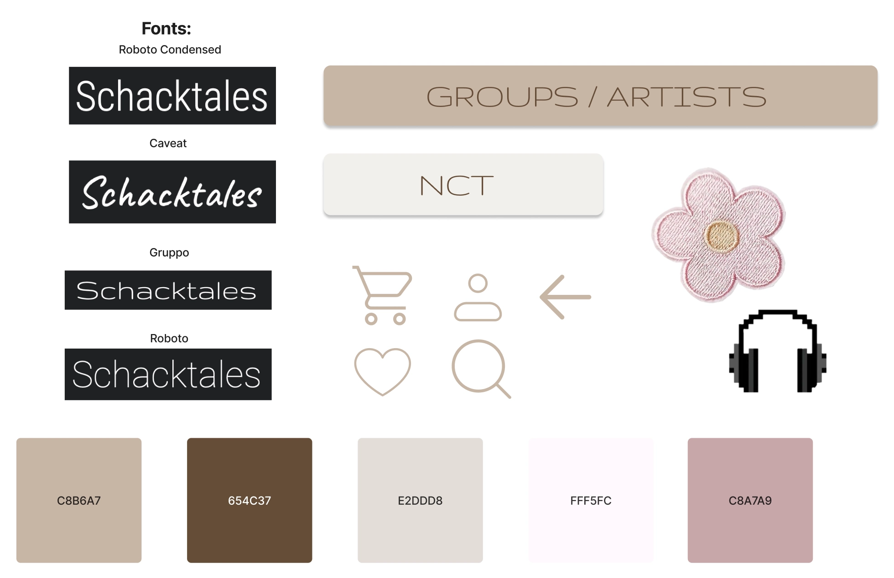
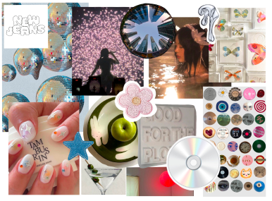
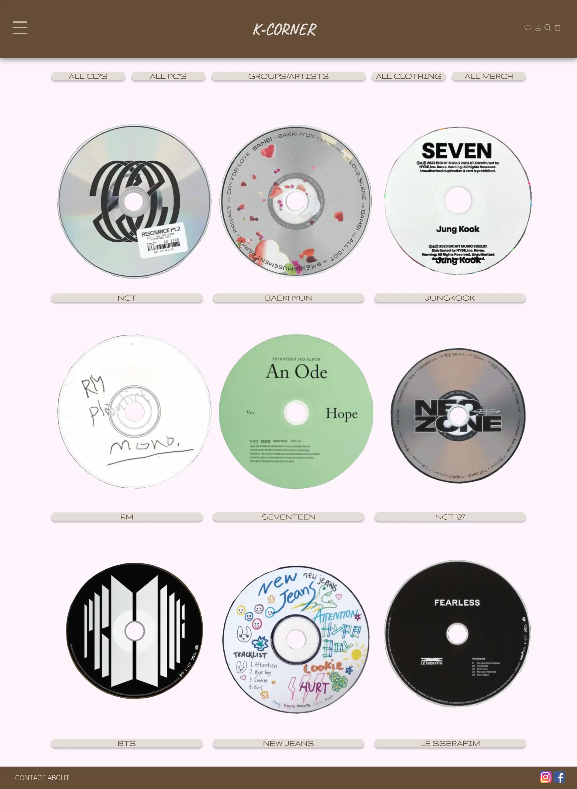
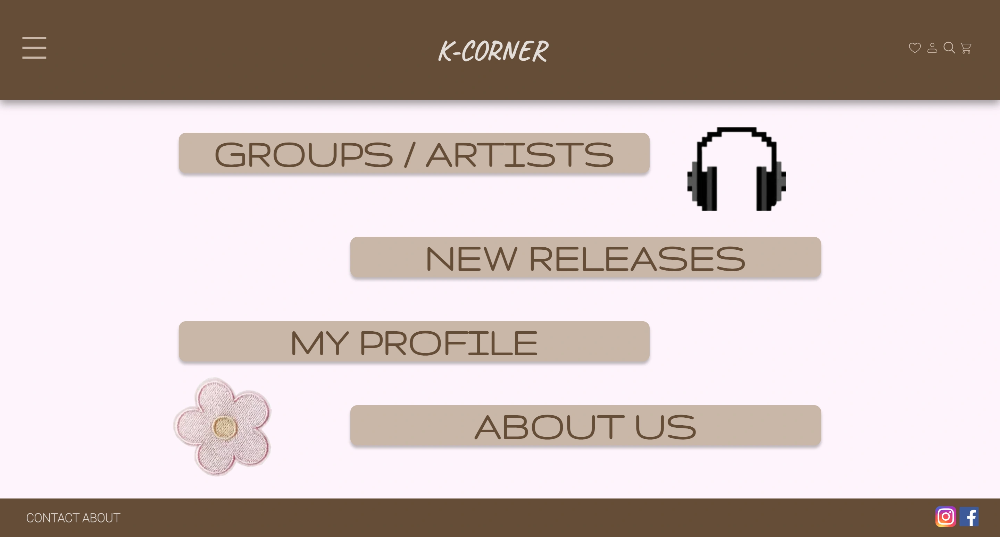

Tema 03 - Grundlæggende UX/UI

I Tema 03 – UX/UI, lærte jeg at få en forståelse for samspillet mellem brugere og brugergrænseflader. Jeg blev i starten af forløbet præsenteret for hele den proces man som multimediedesigner går igennem, når man skal designe/kode et site. Jeg startede min designproces med at lave et dokument i Figma, hvor jeg løbende lagde brainstorms, research, moodboard, styletile, ideer osv ind. Herefter begyndte jeg på mine wireframes og prototype, for at få en ide om hvordan min side kunne/ville se ud. Min prototype lavede jeg klikbar, for derefter at kunne teste den. Her benyttede jeg mig bl.a. af en tænke-højt-test, og en 5 sekunders test, for at få et indblik i en potentiel brugeres oplevelse af mit site. Under forløbet skulle jeg for første gang i semestret, selv tage stilling til gestaltlove og konventioner, og få mig en forståelse for vigtigheden af dem ift. brugervenlighed.
Jeg sluttede forløbet af med at lave en præsentation af mit færdigt kodede site, hvor jeg fortalte om hele min designproces.
Styletile og moodboard
 Færdigt site
 Præsentation